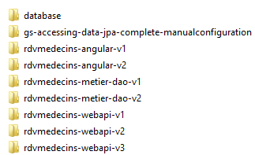
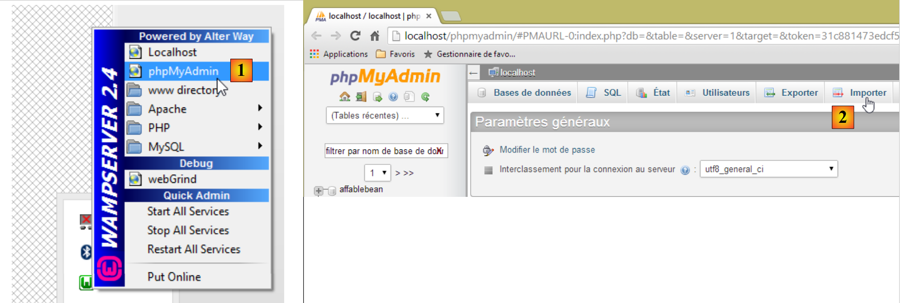
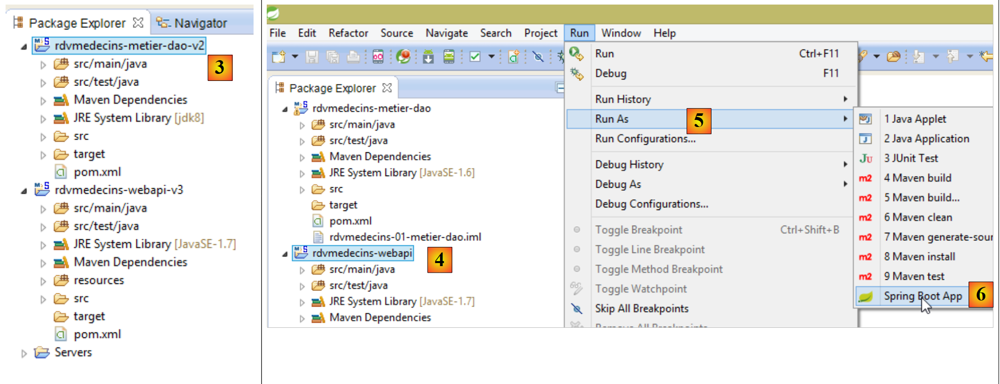
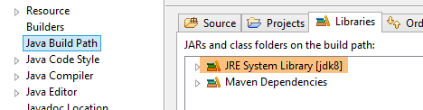
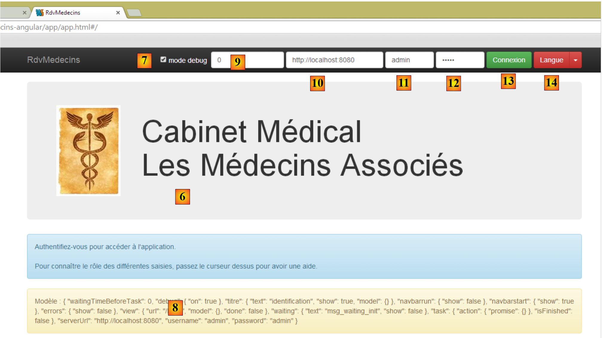
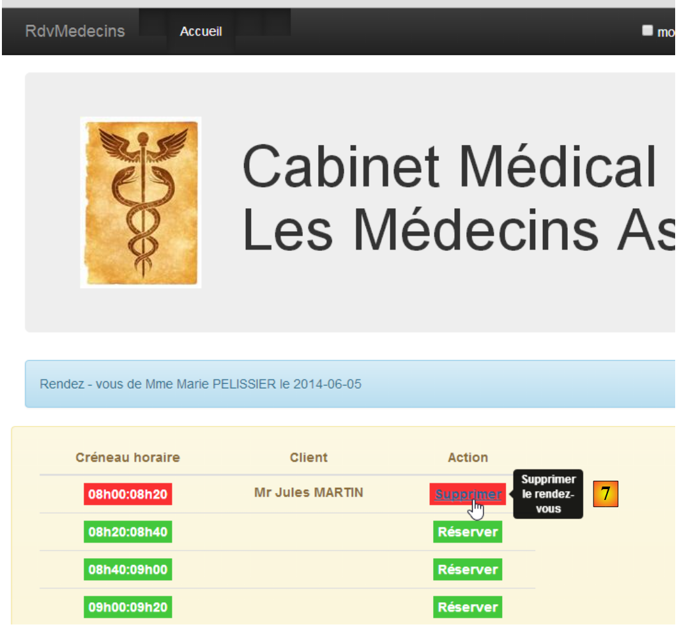

1. Einleitung
Das PDF des Dokuments ist |HIER| verfügbar.
Die Beispiele im Dokument sind |HIER| verfügbar.
Hier möchten wir zwei Frameworks anhand eines Client/Server-Beispiels vorstellen:
- AngularJS wird für den Client verwendet. Der Einfachheit halber wird es im Folgenden als Angular bezeichnet;
- Spring 4 wird für den Server verwendet. Der Einfachheit halber wird es im Folgenden als Spring bezeichnet;
Zum Verständnis dieses Dokuments sind bestimmte Voraussetzungen erforderlich:
- mittlere Kenntnisse in Java EE;
- Kenntnisse in JPA (Java Persistence API), das für den Zugriff auf eine Datenbank verwendet wird;
- Kenntnisse in mindestens einer früheren Version von Spring, um die Philosophie dieses Frameworks zu verstehen;
- Erfahrung mit Maven zur Konfiguration von Java-Projekten;
- ein grundlegendes Verständnis der HTTP-Kommunikation in einer Webanwendung;
- gängige HTML-Tags;
- Grundkenntnisse in JavaScript;
Weitere erforderliche Kenntnisse werden im Verlauf der Fallstudie vorgestellt und erläutert.
Dieses Dokument ist kein Kurs und in vielerlei Hinsicht unvollständig. Um mehr über die beiden Frameworks zu erfahren, können Sie die folgenden Quellen nutzen:
- [ref1]: das Buch „Pro AngularJS“ von Adam Freeman, erschienen bei Apress. Es ist ein ausgezeichnetes Buch. Der Quellcode für die Beispiele in diesem Buch ist kostenlos unter [http://www.apress.com/downloadable/download/sample/sample_id/1527/] verfügbar;
- [ref2]: die offizielle AngularJS-Dokumentation [https://docs.angularjs.org/guide]
- [ref3]: das Buch „Spring Data“ von O’Reilly [http://shop.oreilly.com/product/0636920024767.do], das die Verwendung des [Spring Data]-Frameworks für den Zugriff auf Daten behandelt, sei es aus relationalen oder nicht-relationalen Datenbanken (NoSQL);
- [ref4]: das Buch „Pro Spring 3“, erschienen bei Apress. Dies ist der Vorgänger von Spring 4, aber die wichtigsten Konzepte werden bereits behandelt;
- [ref5]: Die Referenzdokumentation zu Spring 4 [http://docs.spring.io/spring/docs/current/spring-framework-reference/pdf/spring-framework-reference.pdf].
Die für dieses Dokument verwendeten Quellen sind die oben genannten sowie das unverzichtbare [http://stackoverflow.com/] für die zahlreichen Debugging-Sitzungen.
1.1. Die Anwendungsarchitektur
Die betrachtete Anwendung wird die folgende Architektur aufweisen:

- In [1] liefert ein Webserver statische Seiten an einen Browser. Diese Seiten enthalten eine AngularJS-Anwendung, die auf dem MVC-Muster (Model–View–Controller) basiert. Das Modell umfasst hier sowohl die Views als auch die Domäne, die hier durch die [Services]-Schicht repräsentiert wird;
- Der Benutzer interagiert mit den Ansichten, die ihm im Browser angezeigt werden. Seine Aktionen erfordern manchmal eine Abfrage an den Spring 4-Server [2]. Der Server verarbeitet die Anfrage und gibt eine JSON-Antwort (JavaScript Object Notation) zurück [3]. Diese Antwort wird verwendet, um die dem Benutzer angezeigte Ansicht zu aktualisieren.
1.2. Verwendete Tools
In diesem Dokument werden die folgenden Entwicklungstools verwendet:
- Spring Tool Suite für den Spring-Server: als kostenloser Download verfügbar;
- WebStorm für den Angular-Client: Eine einmonatige Testversion steht zum kostenlosen Download bereit;
- Wampserver zur Verwaltung der MySQL-5-Datenbank: als kostenloser Download verfügbar;
Die Installation dieser und anderer Tools wird in Abschnitt 6 beschrieben.
1.3. Anwendungsfunktionen
Der Beispielcode steht |HIER| als ZIP-Datei zum Download bereit.
 |  |
- Der Server befindet sich in den Ordnern [rdvmedecins-metier-dao-v2] und [rdvmedecins-webapi-v3];
- Der Client befindet sich im Ordner [rdvmedecins-angular-v2];
- Das SQL-Skript zum Erstellen der MySQL5-Datenbank befindet sich im Ordner [database];
1.3.1. Erstellen der Datenbank
Um die Anwendung zu testen, erstellen wir zunächst die Datenbank mithilfe des SQL-Skripts [dbrdvmedecins.sql]. Wir verwenden das Tool [PhpMyAdmin] von WampServer:
 |
- Wählen Sie in [1] das Tool [phpMyAdmin] von WampServer aus;
- Wählen Sie in [2] die Option [Importieren] aus;
 |
- Wählen Sie in [3] die Datei [database/dbrdvmedecins.sql] aus;
- Führen Sie sie in [4] aus;
- in [5] wird die Datenbank erstellt.
1.3.2. Webserver / JSON-Implementierung
Importieren Sie mit der Spring Tool Suite (STS) die beiden Spring 4-Server-Maven-Projekte:
 |
- Importieren Sie in [1] und [2] die Maven-Projekte;
- in [3] geben wir den übergeordneten Ordner für die beiden zu importierenden Projekte an;
 |
- in [3] die importierten Projekte. Die Projekte können Fehler enthalten. Jedes von ihnen muss einen Compiler >=1.7 verwenden:
 |
Daher ist eine JVM-Version >= 1.7 erforderlich:
 |
Sobald keine JVM-Fehler mehr auftreten, können wir das Projekt [rdvmedecins-webapi-v3] ausführen:
 |
- In [4], [5] und [6] führen wir das Projekt [rdvmedecins-webapi-v3] als Spring-Boot-Anwendung aus;
Anschließend erhalten wir die folgenden Protokolle in der STS-Konsole:
1.3.3. Implementierung des Angular-Clients
Wir öffnen den Ordner [rdvmedecins-angular-v2] mit WebStorm:
 |
- Wählen Sie in [1] die Option [Verzeichnis öffnen];
- wählen Sie unter [2] den Ordner [rdvmedecins-angular-v2] aus;
 |
- Wählen Sie unter [3] die Ordnerstruktur aus;
- Wählen Sie in [4] die Hauptseite der Anwendung [app.html] aus;
- Öffnen Sie diese in [5] in einem modernen Browser;
 |
- in [6] die Anmeldeseite der Anwendung. Es handelt sich um eine Terminplanungsanwendung für Ärzte. Diese Anwendung wurde bereits im Dokument „Einführung in die Frameworks JSF2, PrimeFaces und PrimeFaces Mobile“ behandelt;
- in [7], ein Kontrollkästchen, mit dem Sie den [Debug]-Modus aktivieren oder deaktivieren können. Dieser Modus wird durch das Vorhandensein des [8]-Frames angezeigt, der das Modell der aktuellen Ansicht anzeigt;
- in [9] eine künstliche Wartezeit in Millisekunden. Der Standardwert ist 0 (keine Wartezeit). Wenn N der Wert dieser Wartezeit ist, wird jede Benutzeraktion nach einer Wartezeit von N Millisekunden ausgeführt. So können Sie die von der Anwendung implementierte Wartezeitverwaltung beobachten;
- in [10] die Spring 4-Server-URL. Basierend auf dem Vorhergehenden lautet diese [http://localhost:8080];
- in [11] und [12], der Benutzername und das Passwort des Benutzers, der die Anwendung nutzen möchte. Es gibt zwei Benutzer: admin/admin (Login/Passwort) mit der Rolle (ADMIN) und user/user mit der Rolle (USER). Nur die Rolle ADMIN hat die Berechtigung, die Anwendung zu nutzen. Die Rolle USER ist ausschließlich dazu gedacht, die Reaktion des Servers in diesem Anwendungsfall zu demonstrieren;
- in [13] die Schaltfläche, über die Sie eine Verbindung zum Server herstellen können;
- in [14] die Sprache der Anwendung. Es gibt zwei: Französisch (Standard) und Englisch.
 |
- unter [1] melden Sie sich an;
 |
- Sobald Sie angemeldet sind, können Sie den Arzt auswählen, bei dem Sie einen Termin vereinbaren möchten [2], sowie das Datum des Termins [3];
- Unter [4] fordern Sie die Anzeige des Terminkalenders des ausgewählten Arztes für den gewählten Tag an;
 |
- Sobald der Terminkalender des Arztes angezeigt wird, können Sie einen Termin buchen [5];
 |
- Wählen Sie unter [6] den Patienten für den Termin aus und bestätigen Sie Ihre Auswahl unter [7];
 |
Sobald der Termin bestätigt ist, gelangen Sie automatisch zurück zum Terminkalender, wo der neue Termin nun aufgeführt ist. Dieser Termin kann später gelöscht werden [7].
Die wichtigsten Funktionen wurden beschrieben. Sie sind einfach. Die nicht beschriebenen Funktionen sind Navigationsfunktionen zum Zurückkehren zu einer vorherigen Ansicht. Schließen wir mit den Spracheinstellungen ab:
 |
- In [1] wechseln Sie von Französisch zu Englisch;
 |
- in [2] wechselt die Ansicht zu Englisch, einschließlich des Kalenders;